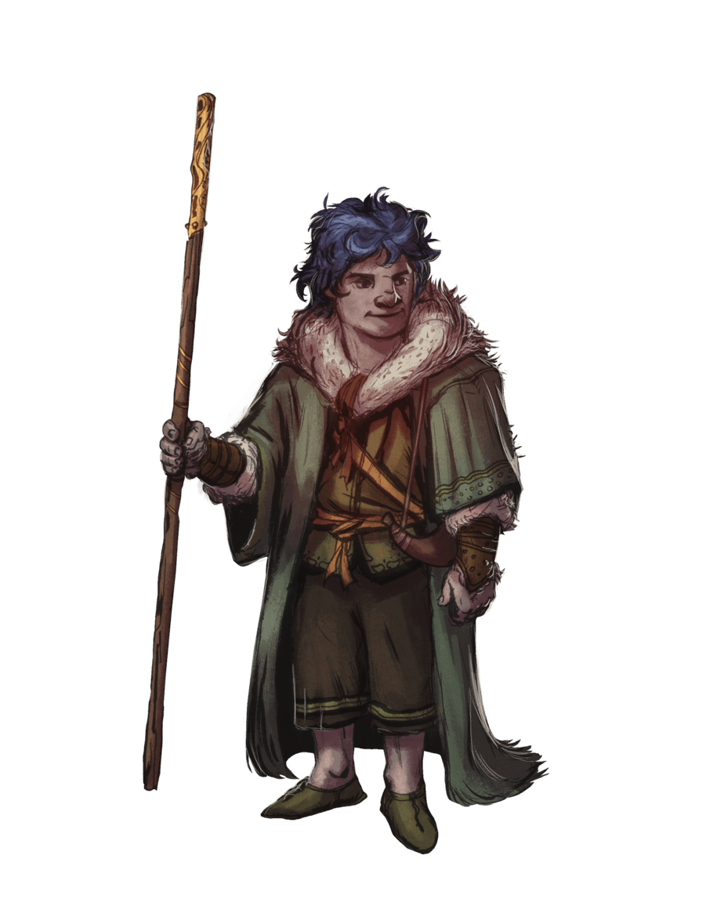

Gnome
Description¶
Un bourdonnement constant d'activités imprègne les garennes et villages où les gnomes forment de solides communautés. Des sons plus forts viennent parfois ponctuer le bourdonnement : un craquement de rouage par-ci, une petite explosion par là, un cri de triomphe ou de déception, et souvent un éclat de rire. Les gnomes apprécient la vie, profitant de chaque instant d'invention, d'exploration, d'investigation, de création et de jeu.

Expressivité Lumineuse¶
L'énergie d'un gnome et son attrait pour la vie peuvent se voir à travers tous les centimètres de son petit corps. Les gnomes mesurent en moyenne un peu au-dessus des 90 cm et pèsent entre 20 et 23 kg. Leur teint bronzé est généralement parcouru d'un immense sourire (sous leurs nez proéminents), et leurs yeux brillent régulièrement d'excitation. Leurs cheveux clairs ont tendance à s'éparpiller dans toutes les directions, comme pour représenter leur intérêt insatiable dans tout ce qui les entoure.
La personnalité d'un gnome s'exprime énormément dans son apparence. La barbe d'un gnome, à la différence de ses cheveux ébouriffés, est soigneusement taillée tout en étant coiffée en pointes ou en fourches. Les vêtements d'un gnome, bien que souvent dans des teintes plutôt modestes, sont élégamment décorés avec des broderies ou des joyaux.
Sous-races¶
En fonction de leur lieu d'habitation, les gnomes ont évolué en différentes sous-races :
| Sous-race | Description |
|---|---|
| Gnome des profondeurs (Svirfneblin) | Habitants de l'Outreterre, furtifs et résistants à la magie. |
| Gnome des forêts | Illusionnistes nés, capables de communiquer avec les petits animaux. |
| Gnome des roches | Inventeurs robustes et créateurs de petits dispositifs mécaniques. |
Culture¶
Dévouement Ravi¶
Pour les gnomes, être en vie est la meilleure chose qui soit, et ils tirent tout le plaisir possible de leurs trois à cinq siècles de vie. Les humains se questionnent parfois à propos de l'ennui d'une vie si longue et les elfes prennent leur temps pour profiter des beautés du monde pendant de longues années, mais les gnomes s'inquiètent que même avec tout ce temps, ils ne pourraient pas voir et faire toutes les choses à voir et faire.
Les gnomes parlent comme s'ils n'arrivaient pas à sortir toutes les idées qu'ils ont en tête. Même s'ils aiment partager idées et opinions sur tout un tas de sujet, ils sont capables d'écoute attentive, ponctuant d'exclamation de surprise et d'appréciation le long des conversations.
Même si les gnomes adorent les blagues de tout genre, particulièrement les jeux de mots et autres farces, ils sont tout autant dévoués aux tâches sérieuses qu'ils entreprennent. Beaucoup de gnomes sont des ingénieurs talentueux, des alchimistes, des bricoleurs ou des inventeurs. Ils sont capables de faire des erreurs et d'en rire si le but final est de perfectionner leur art, en prenant des risques et en visant gros.
Terriers Lumineux¶
Les gnomes font leurs maisons dans des terres forestières et vallonnées. Ils vivent sous terre, mais prennent plus l'air frais que ce que font les nains, appréciant le monde naturel de la surface dès qu'ils le peuvent. Leurs habitations sont dissimulées à la fois par des constructions rusées et par de simples illusions. Les invités bienvenus sont rapidement dirigés vers les terriers lumineux et chaleureux, tandis que les intrus n'arrivent généralement pas à les trouver.
Les gnomes qui s'installent sur des territoires humains sont généralement des joaillers, des ingénieurs, des sages ou des bricoleurs. Pas mal de familles humaines font appel à des tuteurs gnomes qui s'assurent que leurs élèves disposent d'un savant mélange d'apprentissage et de jeu. Un gnome peut même s'occuper de plusieurs générations d'une famille humaine à travers sa longe vie.
Explorer le Monde¶
Curieux et impulsifs, les gnomes peuvent choisir l'aventure comme moyen de voir le monde ou pour leur amour de la nouveauté. Amoureux des gemmes et autres objets précieux, certains gnomes choisissent l'aventure comme un chemin rapide, mais risqué, vers la richesse. Quelle que soit la raison qui les guide vers l'aventure, les gnomes qui adoptent ce mode de vie en tirent autant de plaisir qu'ils le feraient de tout autre activité, parfois au plus grand désarroi de leurs compagnons.
Langue¶
Noms de Gnomes¶
Les gnomes adorent les noms, et la plupart d'entre eux en ont une douzaine. La mère, le père, le chef de clan ainsi que les oncles et tantes donnent chacun au gnome un nom, et plusieurs surnoms peuvent apparaître avec le temps. Les noms des gnomes sont généralement des variantes des noms de leurs ancêtres ou de familles éloignées, même si certains sont des inventions de toutes pièces. Lorsqu'ils traitent avec les humains ou d'autres qui sont coincés avec les noms, les gnomes apprennent rapidement à ne pas utiliser plus de trois noms : un nom personnel, un nom de clan et un surnom, choisissant généralement les plus rigolos à dire dans chaque catégorie.
Noms Masculins : Alston, Alvyn, Boddynock, Brocc, Burgell, Dimble, Eldon, Erky, Fonkin, Frug, Gerbo, Gimble, Glim, Jebeddo, Kellen, Namfoodle, Orryn, Roondar, Seebo, Sindri, Warryn, Wrenn, Zook
Noms Féminins : Bimpnottin, Breena, Caramip, Carlin, Donella, Duvamil, Ella, Ellyjobell, Ellywick, Lilli, Loopmottin, Lorilla, Mardnab, Nissa, Nyx, Oda, Orla, Roywyn, Shamil, Tana, Waywocket, Zanna
Noms de Clan : Beren, Daergel, Folkor, Garrick, Nackle, Murnig, Ningel, Raulnor, Scheppen, Timbers, Turen
Surnom : Patauge-bière, Cendre-terre, Blaireau, Cape, Doubletour, Volpâte, Fnipper, Ku, Nim, Unegodasse, Pock, Kibrille, Canard-boiteux
Gnome des profondeurs (Svirfneblin)¶
Description¶
Les gnomes des profondeurs, ou svirfneblins, sont natifs de l'Outre-Terre et sont imprégnés de la magie de leur domaine. Ils peuvent se camoufler et leur magie svirfneblin les rend difficiles à localiser. Ces compétences leur ont permis de survivre pendant des générations au milieu des dangers de l'Outre-Terre.
Mécaniques¶
Augmentation de caractéristiques. Quand vous déterminez les caractéristiques de votre personnage, augmentez l'une de ces caractéristiques par 2 et augmentez une autre par 1, ou augmentez trois caractéristiques différentes par 1. (Conseillé : INT +2, FOR +1)
Type de Créature. Vous êtes un humanoïde.
Langage. Vous parlez l'Outre-Commun et le Gnomique. Le Gnomique, qui utilise l'alphabet Nain, est renommé pour ses documents techniques et autres catalogues de savoir.
Âge. Les svirfneblins vivent peu longtemps pour des gnomes. Ils grandissent à la même vitesse que les humains, et sont considérés adultes à l'âge de 25 ans. Ils vivent entre 200 et 250 ans, même si les dangers et le travail incessant de l'Outre-Terre les emportent généralement plus tôt.
Taille. Les svirfneblins mesurent entre 90 cm et 1.20 m, et pèsent entre 35 et 60 kg. Votre taille est Petite (P).
Vitesse. Votre vitesse de base est de 30 ft. (9 m/6 cases).
Vision dans le noir. Habitué à vivre sous terre, vous avez une vision supérieure dans l'obscurité et la lumière faible. Vous pouvez voir à 120 ft. (36 m/24 cases) dans une zone de lumière faible comme vous verriez avec une lumière vive, et dans le noir comme avec une lumière faible. Vous ne pouvez pas discerner les couleurs dans l'obscurité, seulement les nuances de gris.
Camouflage Svirfneblin. Lorsque vous faites un jet de Dextérité (Discrétion), vous pouvez réaliser ce jet avec l'avantage. Vous pouvez utiliser ce trait un nombre de fois égal à votre bonus de maîtrise, et vous récupérez toutes les utilisations lorsque vous terminez un repos long.
Don des Svirfneblin. À partir du niveau 3, vous pouvez lancer le sort Déguisement avec ce trait. À partir du niveau 5, vous pouvez aussi lancer le sort antidétection, sans avoir besoin des composantes matérielles. Une fois que vous avez lancé l'un de ces sorts avec ce trait, vous ne pouvez pas relancer ce sort avant d'avoir fini un repos long. Vous pouvez aussi lancer ces sorts en utilisant vos emplacements de sorts du niveau approprié.
Votre caractéristique d'incantation pour ces sorts est, au choix, l'Intelligence, la Sagesse ou le Charisme.
Ingéniosité Gnome. Vous avez l'avantage aux jets de sauvegarde d'Intelligence, de Sagesse ou de Charisme contre les sorts.
Gnome des forêts¶
Description¶
Les gnomes des forêts ont une habileté naturelle pour l'illusion ainsi qu'une vitesse et une discrétion innée. Généralement, les gnomes des forêts sont rares et plutôt discrets. Ils se concentrent dans des communautés cachées dans les forêts sylvaines, en utilisant l'illusion et la malice pour se camoufler des menaces ou pour couvrir leur fuite lorsqu'ils sont détectés. Les gnomes des forêts ont tendance à être amicaux avec les habitants bien intentionnés des bois, et ils considèrent les elfes et les bons fées comme leurs plus grands alliés. Ces gnomes peuvent également se lier d'amitié avec des petits animaux de la forêt et compter sur eux pour la récolte d'informations à propos des menaces qui pèsent sur leurs terres.
Mécaniques¶
Augmentation de caractéristiques. Quand vous déterminez les caractéristiques de votre personnage, augmentez l'une de ces caractéristiques par 2 et augmentez une autre par 1, ou augmentez trois caractéristiques différentes par 1. (Conseillé : INT +2, DEX +1)
Type de Créature. Vous êtes un humanoïde.
Langage. Vous parlez le Commun et le Gnomique. Le Gnomique, qui utilise l'alphabet Nain, est renommé pour ses documents techniques et autres catalogues de savoir.
Âge. Les gnomes grandissent à la même vitesse que les humains, et la plupart s'établissent dans la vie adulte aux alentours de 40 ans. Ils peuvent vivre en moyenne 350 ans, et jusqu'à 500 ans.
Taille. Les gnomes mesurent entre 90 cm et 1,20 m, et pèsent environ 20 kg. Votre taille est Petite (P).
Vitesse. Votre vitesse de base est de 25 ft. (7.5 m/5 cases).
Vision dans le noir. Habitué à vivre sous terre, vous avez une vision supérieure dans l'obscurité et la lumière faible. Vous pouvez voir à 60 ft. (18m/12 cases) dans une zone de lumière faible comme vous verriez avec une lumière vive, et dans le noir comme avec une lumière faible. Vous ne pouvez pas discerner les couleurs dans l'obscurité, seulement les nuances de gris.
Communication avec les Petits Animaux. À l'aide de sons et de gestes, vous pouvez communiquer des idées simples avec des bêtes de taille P ou plus petites. Les gnomes de la forêt adorent les animaux et gardent souvent des écureuils, des blaireaux, des lapins, des taupes, des pic-verts ou d'autres créatures comme leurs animaux de compagnie adorés.
Illusionniste Né. Vous connaissez le cantrip Illusion Mineure. Votre caractéristique d'incantation pour ce sort est l'Intelligence.
Ingéniosité Gnome. Vous avez l'avantage aux jets de sauvegarde d'Intelligence, de Sagesse ou de Charisme contre les sorts.
Gnome des roches¶
Description¶
Les gnomes des roches disposent d'une ingéniosité naturelle et d'une solidité au-delà de celles des autres gnomes. La plupart des gnomes sont des gnomes des roches.
Mécaniques¶
Augmentation de caractéristiques. Quand vous déterminez les caractéristiques de votre personnage, augmentez l'une de ces caractéristiques par 2 et augmentez une autre par 1, ou augmentez trois caractéristiques différentes par 1. (Conseillé : INT +2, CON +1)
Type de Créature. Vous êtes un humanoïde.
Langage. Vous parlez le Commun et le Gnomique. Le Gnomique, qui utilise l'alphabet Nain, est renommé pour ses documents techniques et autres catalogues de savoir.
Âge. Les gnomes grandissent à la même vitesse que les humains, et la plupart s'établissent dans la vie adulte aux alentours de 40 ans. Ils peuvent vivre en moyenne 350 ans, et jusqu'à 500 ans.
Taille. Les gnomes mesurent entre 90 cm et 1,20 m, et pèsent environ 20 kg. Votre taille est Petite (P).
Vitesse. Votre vitesse de base est de 25 ft. (7.5 m/5 cases).
Vision dans le noir. Habitué à vivre sous terre, vous avez une vision supérieure dans l'obscurité et la lumière faible. Vous pouvez voir à 60 ft. (18m/12 cases) dans une zone de lumière faible comme vous verriez avec une lumière vive, et dans le noir comme avec une lumière faible. Vous ne pouvez pas discerner les couleurs dans l'obscurité, seulement les nuances de gris.
Bricoleur. Vous maîtrisez les outils de bricoleur. En utilisant ces outils, vous pouvez passer 1 heure et dépenser l'équivalent de 10 PO de matériaux pour créer un mécanisme de taille TP, de CA 5 et 1 PV. Le dispositif cesse de fonctionner après 24 heures (sauf si vous passez 1 heure à le réparer pour le garder fonctionnel), ou lorsque vous utilisez votre action pour le démonter ; à cet instant, vous pouvez récupérer les matériaux dépensés dans sa création. Vous pouvez avoir jusqu'à trois dispositifs actifs en même temps.
Lorsque vous créez un mécanisme, choisissez parmi ces options :
Jouet Mécanique. Ce jouet représente un animal, un monstre ou personne mécanique, comme une grenouille, une souris, un oiseau, un dragon ou un soldat. Lorsqu'il est placé sur le sol, il se déplace de 1.5 m chaque tour dans une direction aléatoire et fait des bruits en fonction de la créature qu'il représente.
Allume Feu. Le mécanisme produit une flamme miniature, que vous pouvez utiliser pour allumer une bougie, une torche ou un feu de camp. Utiliser le dispositif consomme une action.
Boîte à Musique. Lorsqu'on l'ouvre, la boîte reproduit une chanson (toujours la même) à un volume modéré jusqu'à la fin du morceau ou que la boîte soit refermée.
Connaissance en Ingénierie. À chaque fois que vous réalisez un jet d'Intelligence (Histoire) lié aux objets magiques, à l'alchimie ou à la technologie, vous pouvez ajouter deux fois votre bonus de maîtrise, plutôt que ce que vous ajouteriez normalement.
Ingéniosité Gnome. Vous avez l'avantage aux jets de sauvegarde d'Intelligence, de Sagesse ou de Charisme contre les sorts.